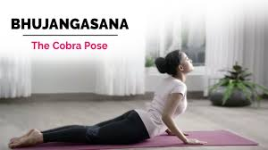

YOG ASAN
Yog Asan 1
Yog Asan 2
Yog Asan 3
Yog Asan 4
Bhujangasana (Cobra Pose)

INFO OF BHUJANGASANA
For vedio click here
Paschimottanasana
INFO OF PASCHIMOTTANASANA (Chair Pose)
For vedio click here
Child's Pose
INFO OF CHILD'S POSE
For vedio click here